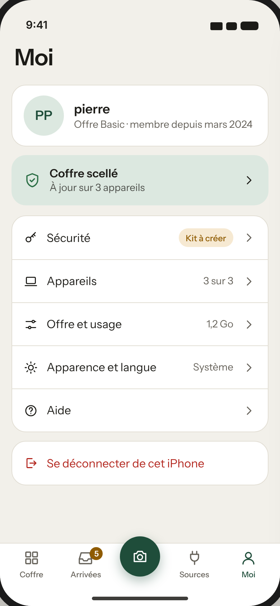
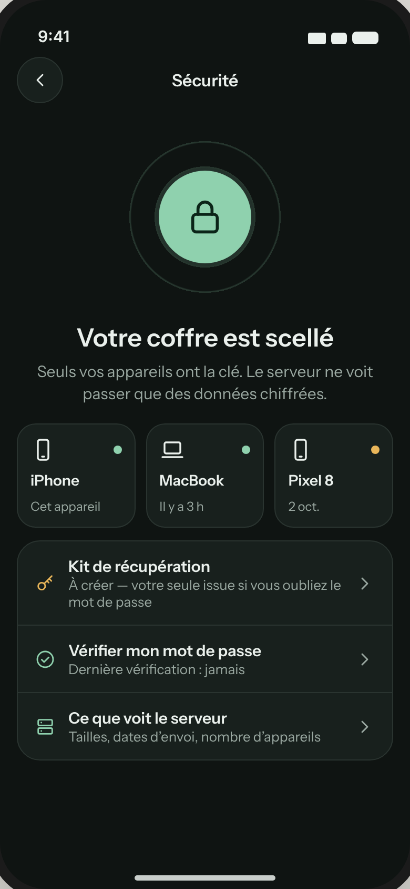
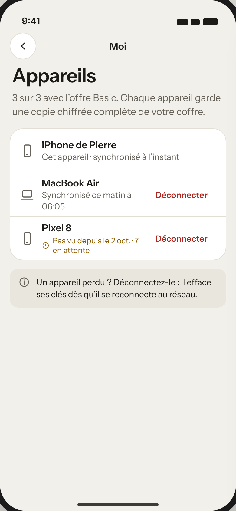
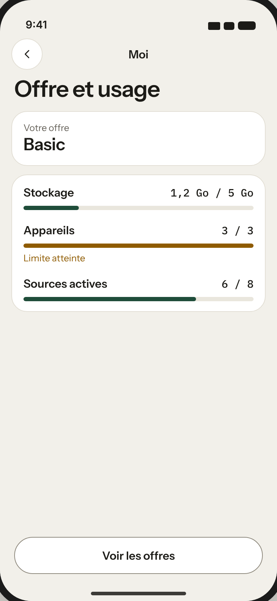
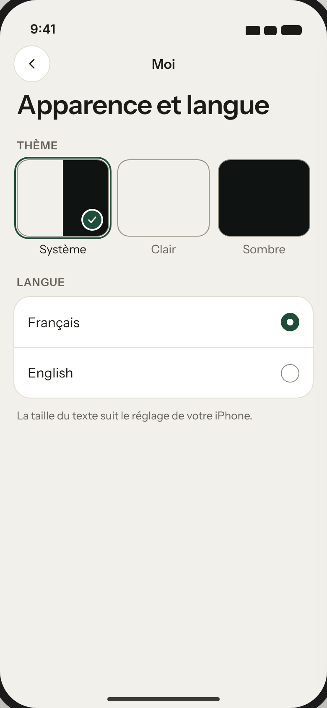
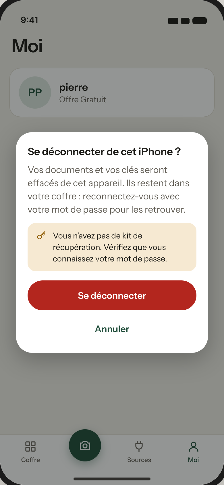
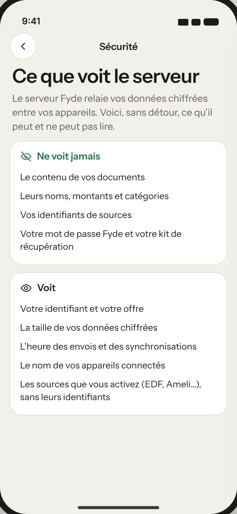
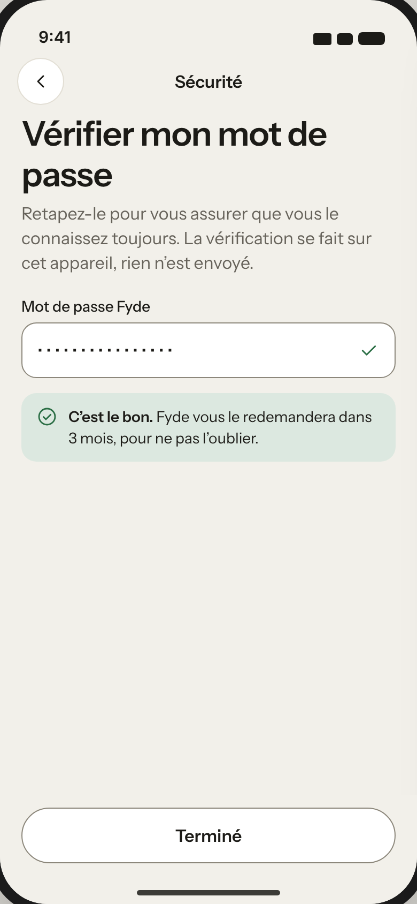
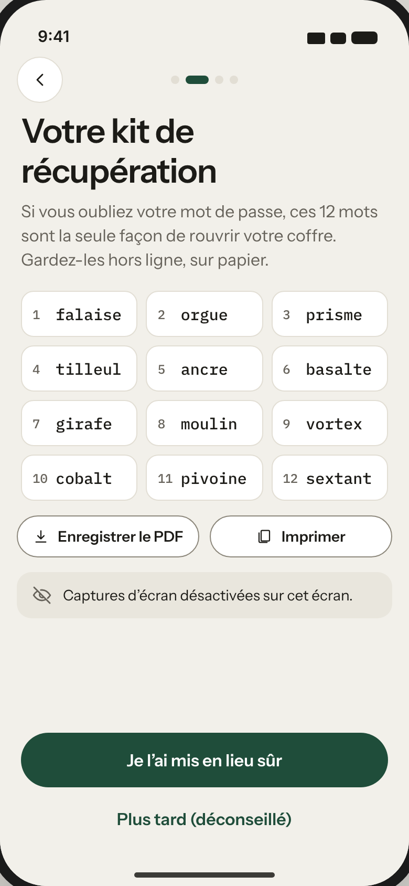
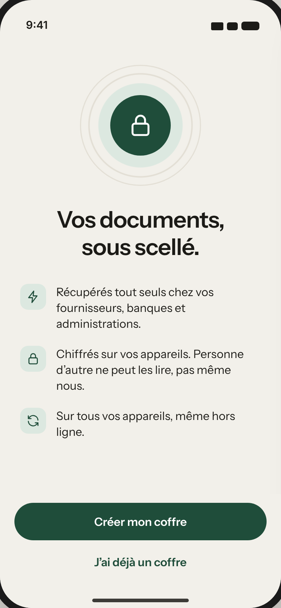

Tout part de M1. Chaque écran s’ouvre par-dessus M1, avec un retour en haut à gauche ; M8 est un dialogue sur M1. Sur bureau et tablette, M1 s’ouvre depuis le menu de l’avatar ; ses écrans n’y sont pas encore dessinés.

M1 · Moi
Profil, carte « Coffre scellé », réglages, Se déconnecter

M2 · Sécurité
Ligne Sécurité ou carte « Coffre scellé » ; aussi la ligne « Scellé » du Coffre

M5 · Appareils
Aussi par les tuiles d’appareils de M2

M6 · Offre et usage
Aussi depuis la limite de sources : O7b, DO7h, S1

M7 · Apparence et langue

M8 · Se déconnecter
Dialogue sur M1 ; alerte si pas de kit

M3 · Ce que voit le serveur

M4 · Vérifier le mot de passe
Aussi depuis le rappel tous les 3 mois

O6 · Kit de récupération
Même écran qu’à la création ; en refaire un remplace l’ancien

O1 · Bienvenue
Après déconnexion : cet appareil est effacé ; O2 pour revenir
oublié ?
confirmé